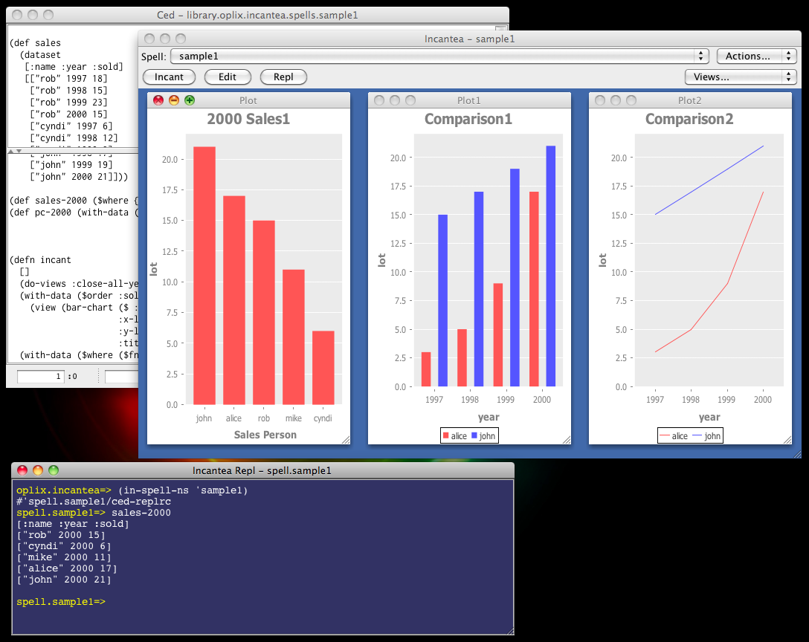

oplix name: incantea
Incantea (pronounced "inˈkantē") is a font-end for Incanter to help you work with your Incanter projects.
Libs you create using Incantea are called spells. Each spell has a namespace whose name begins with library.oplix.incantea.spells and the incant function. For example, the spell "open-sesame" has the namespace library.oplix.incantea.spells.open-sesame and the function `library.oplix.incantea.spells.open-sesame/incant'.
You can create and delete spells, edit spell using Ced, call the incant function, and open the REPL to work on spell interactively.

Let's see how Incantea works using the sample spell sample1. Choose sample1 in the Spell listbox and then click the Incant button. Incantea calls the spell's incant function and it shows the result by opening three views.
A view is a window inside Incantea window (technically a view is a JInternalFrame). You open views using the view function and manage them using the helper functions such as the get-views and do-views functions. For example, the sample1 spell opens three views using the view function and those are tiled horizontally using the do-views function.
You can rearrange views from the Views... listbox. One of the menu items is 'Fit In'. The difference between fitting in and zooming in by clicking the green zoom (+) button in the top-left corner of view is that you can still grab the bottom-right corner of view and resize it after 'fitting in' the view, whereas the green zoom button doesn't allow it until you zoom out the view by clicking the green zoom button again.
Now let's see how the incant function of the sample1 spell is written. Open the spell in Ced by clicking the Edit button and find the function. You can see the view and do-views functions are called as explained above. Let's make a change. Instead of comparing the sales of Alice with John, do it with Rob. Change the line 55 like this:
(with-data ($where ($fn [name] (or (= name "alice") (= name "rob"))) sales)
Save the file by pressing META+S. Then click the Incant button to see the new comparison result.
in-spell-ns and create-spell-ns FunctionsYou can also work with spell interactively. Open the REPL by clicking the Repl button. When you open the REPL from Incantea, Incantea opens a dedicated REPL window and remembers it. So when you click the Repl button again, Incantea doesn't open another REPL window. Instead, it brings the dedicated REPL window on the front. When Incantea quits, it closes the dedicated REPL window.
The REPL starts in the namespace oplix.incantea instead of user. In order to work with spell at the REPL, you could refer to the spell's namespace or move in the spell's namespace. But Incantea has an easier and cleaner way for you; the in-spell-ns function. At the REPL call the in-spell-ns function with spell name in symbol like this:
(in-spell-ns 'sample1)
This creates a namespace named spell.sample1 with reference to the spell's namespace library.oplix.incantea.spells.sample1 and then set *ns* to the namepsce. Think it this way; the namespace spell.sample1 is a "workbench" namespace in which you test and refine the sample1 spell.
Move in the spell.sample1 namespace using the in-spell-ns function and type "sales-2000" at the REPL. You will see the dataset as it is defined in the spell. Let's define another dataset for sales in 1999 as well and see it at the REPL. In the spell sales-2000 is defined like this:
(def sales-2000 ($where {:year 2000} sales))
Define sales-1999 similarly at the REPL.
(def sales-1999 ($where {:year 1999} sales))
Then type sales-1999 at the REPL and see it shows the dataset as expected. You can also open views to see the dataset from different aspects. Try these at the REPL.
(view sales-1999)
(with-data sales-1999 (view (bar-chart ($ :name) ($ :sold))))
The views will be opened in the Incantea window. To tile the views horizontally or vertically, call the do-views function.
(do-views :tile-horizontally)
(do-views :tile-vertically)
You can also call the get-views function to get all views and the get-view function to get a specific view. Having view you can change its properties such as name, title and size.
sales-1999 above is defined in the spell.sample1 namespace. Whereas sales-2000 is defined in the library.oplix.incantea.spells.sample1 namespace. Let's move sales-1999 to the same namespace. To do that, open the spell in Ced and insert the def line for sales-1999, say, between line 42 and 43. Press MEA+S to save the spell and then press F2 to load it. Back to the REPL and type (var sales-1999). You can see the dataset is now defined in the library.oplix.incantea.spells.sample1 namespace. The real trick to make it happen is that the call to the create-spell-ns function at the end of the spell; it does the same thing as the in-spell-ns function except extra setup for the REPL.
use-incanter Macro and The get-using-incanter FunctionThe Incanter API is divided up in several libs. By default spell uses the following Incanter libs.
core charts datasets processing stats
When you use the Incanter libs in your spell, don't refer them using the Clojure's use function. Use the use-incanter macro instead. When no argument is given the macro refers to the above Incanter libs with extra setup for Incantea. When other Incanter lib names are given, the macro refers to them additionally. For example, this use-incanter call refers to the Incanter libs bayes and distrubtions in addition to core, charts, datasets, processing, and stats.
(use-incanter bayes distributions)
As you case see, you don't need to fully qualify the lib names. To see what Incanter libs are being referred to currently, call the get-using-incanter function.
There are a few things you should keep in mind about the incant function.
Incant button lets Incantea call the incant function of the current spell.incant function in another thread using the future function.To add a new spell choose New Spell from the Actions... listbox and type the spell name. Translations from space to hyphen and slash to period in the name will be applied. Incantea opens the new spell filled with a template code in Ced.
To delete spell, choose Delete... from the Actions... listbox. The current spell will be deleted.
Incanter on GitHub comes with sample datasets, and you can get the datasets using the Incanter's get-dataset function. The get-dataset function refers to the var *incanter-home* to find the data directory where the datasets are saved.
In Incantea the *incanter-home* var is set to library.oplix.incantea. When Incantea starts, it calls the download-datasets funcion to download the sample datasets to the data directory from the Incanter repository on GitHub. If the get-dataset function doesn't work for some datasets or entirely, try copying the sample datasets manually to the library.oplix.incantea.data directory.
You can customize downloading datasets and the repository URL by modifying the file library.oplix.incantea.sample-datasets. You can also manually add datasets from a URL using the download-datasets function.